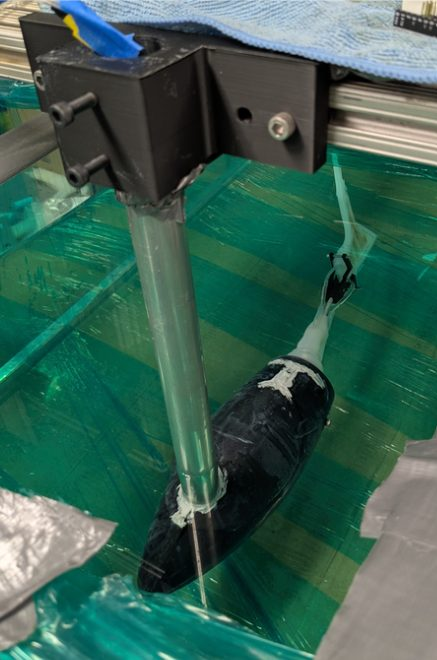
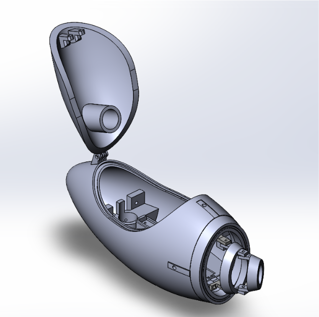
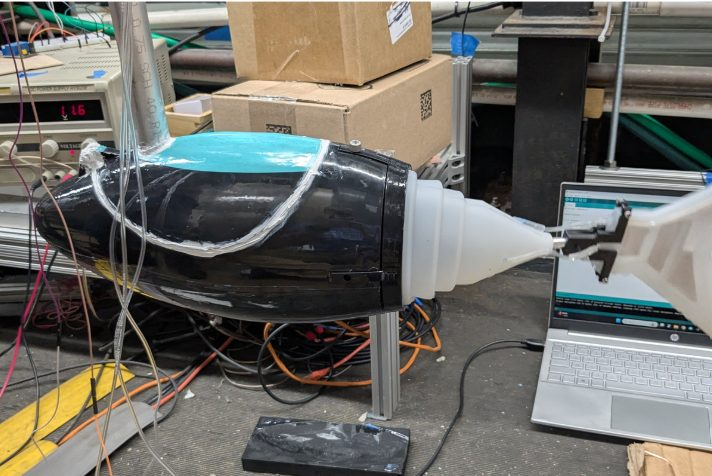

UMD Hydrodynamics Lab · Built
Robotic Fish: Flipper Propulsion
- 3D printing
- Mold casting
- Waterjet cutting
- Lathe
- Waterproofing
- Layer jamming

Overview
An early underwater fish I designed and fabricated in the University of Maryland Hydrodynamics Lab to test the use of flippers for underwater propulsion. A vertical mounting pole lets the rig read the fish's force output using different tail materials, and a layer-jamming tail lets its stiffness be changed on demand.
Fabrication
I made all of the parts using 3D printing, mold casting, waterjet cutting, and a lathe. The housing was waterproofed with caulk glue and an epoxy coating.

Variable-stiffness tail
To simulate different tail stiffnesses, I used a layer-jamming technique: pulling a vacuum on sheets of paper inside the tail stiffens it on demand.
